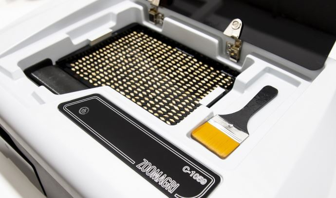

26 mars 2021
ZoomAgri et Secobra Recherches viennent d'annoncer la signature de leur partenariat. Objectif : développer ensemble ZoomBarley, « une solution rapide d’identification des principales variétés d’orge brassicole cultivées en France », présentent les deux entreprises.
En associant les nouvelles technologies liées à l’analyse d’image développées par ZoomAgri et l’expertise de Secobra Recherches en matière d’identification variétale », les deux entreprises entendent proposer à tous les acteurs de la filière brassicole « un outil capable de prédire en temps réel l'identité variétale de leurs lots » avec ZoomBarley.
Pour Olivier Guyomard, responsable du laboratoire d'identification variétale chez Secobra Recherches, cela représente une aide précieuse pour « faciliter l’allotement » en « annonçant la variété dès la réception des marchandises chez les organismes collecteurs ».
Article original : Ici